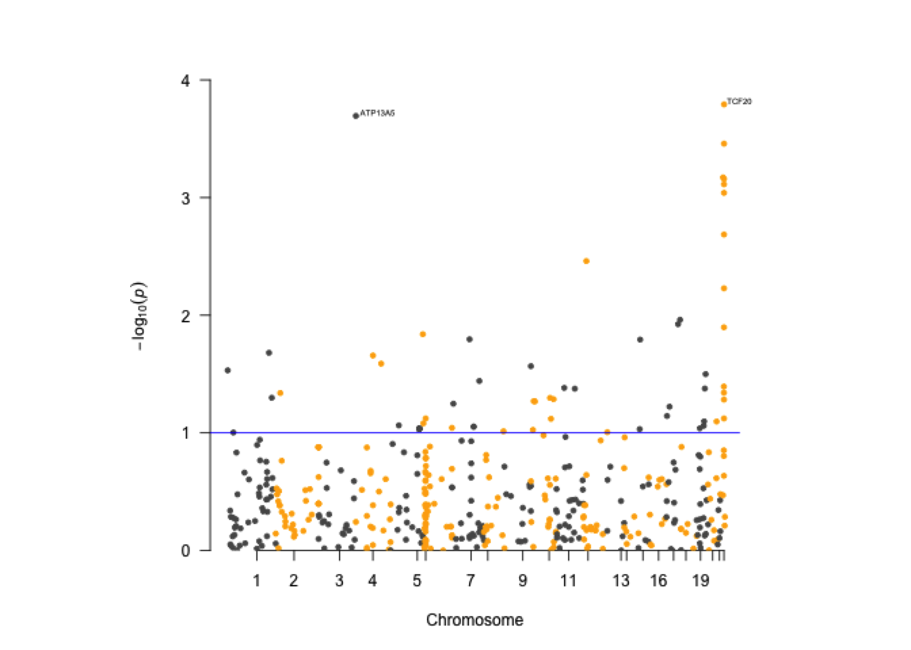
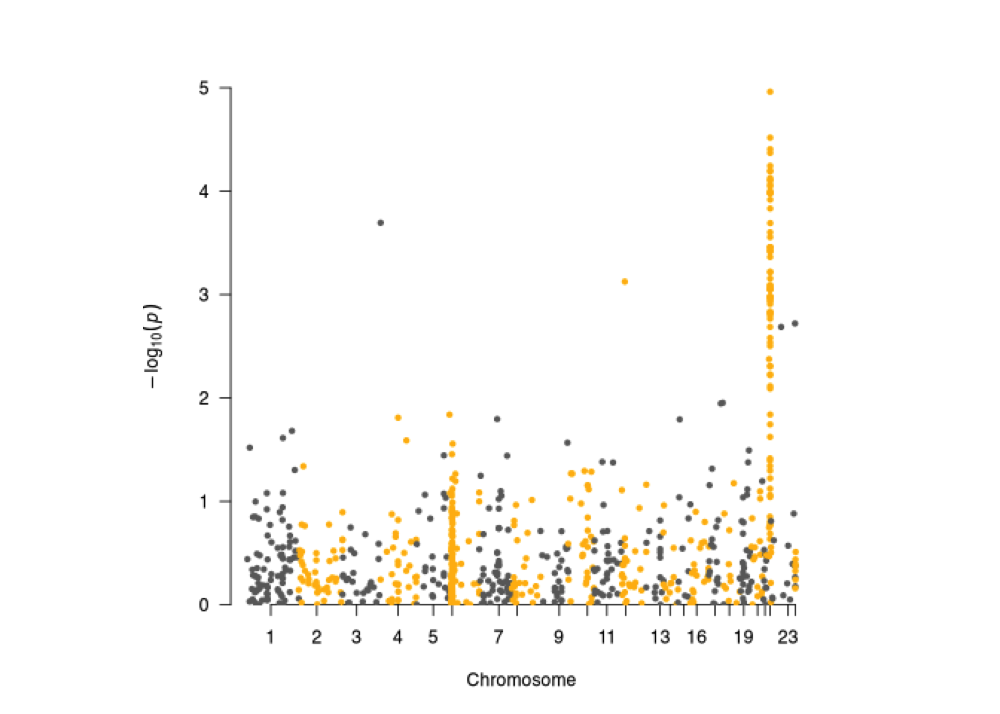

Chapter 8 LDSC and Gene-Set Analysis
Due to privacy concern, there haven’t been many individual genotype datasets that are publically available online. So finding and preparing a genotype data for GWAS analysis can cost great efforts in research. Here are several analysis tools that are able to directly handle GWAS summary statistics and perform post-GWAS analysis.
8.1 LDSC (Linkage Disequilibrium Score Regression)
LDSC is a popular tool to use when you only have the public results from GWAS analysis. LDSC aims to quantify the polygenic effects, such as population stratification, using regression analysis. Please check the original paper from Bulik-Sullivan et al.(2015).
It has to be installed in command line and requires Anaconda python dstribution. We won’t practice this software here since the installation may depend on computer system. But you can try the examples on their website if your laptop satisfies the system requirements.
LDSC Github page contains installation instructions. They also provide detailed examples on how to {estimate LD scores](https://github.com/bulik/ldsc/wiki/LD-Score-Estimation-Tutorial), estimate SNP heritability and genetic correlation among phenotypes and partition the heritability into categories using GWAS summary statistics.
Below are two public courses that gives a good introduction to LDSC:
Video 1: LD Score Regression I, Heritability and Partitioning
Video 2: LD Score Regression II, Heritability and Partitioning
8.2 MAGMA (for Gene-Level Analysis)
MAGMA is a statistical methods for gene-set analysis of multiple genetic markers. This method can be used when the individual marker’s effects are too weak to be detected, such as in polygenic traits. It aims to analyze multiple markers simultaneously to estimate their joint effects. Please check the paper from de Leewu et al.(2015).
The analysis consists of two parts. The first part is gene analysis, which combines all SNPs within a gene region and examines the overall association between each gene and phenotype using a multiple linear regression model. This step requires the raw genotype data if not already have the GWAS results. The second part is gene-set analysis, which tests whether genes within a defined gene-set is more associated with the pheotype than those outside of the set.
For each gene \(g\), we obtain the gene p-value \(p_g\) from part one of gene analysis. Next, for the part two of gene-set analysis, we first transform the p-values \(p_g\) to Z-value using:For gene set analysis, we test whether genes exhibit a stronger association with the phenotype of interest compared to other genes within a specific gene-set \(s\) :
\(\beta_{0s}\): intercept
\(S_s:\) An indicator variable, with \(S_g=1\) for gene \(g\) in the gene set \(s\).
\(\beta_s\): effect of genes inside the gene sets compared to genes outside the region
\(\epsilon\): residual
Then, MAGMA uses a t-test to test whether genes inside the test is more associated with the phenotype \(\beta_s>0\), against null \(\beta_s=0\).
The MAGMA program can be downloaded from MAGMA website and can be installed under multiple systems. You can check their manual HERE.
Additionally, their website also provides a list of public GWAS summary statistics data for you to download and practice. Please check them HERE.
The MAGMA installation packages are already downloaded inside Tools/MAGMA.
8.2.1 Prepare Annotation File
Before we can run gene analysis, we need to map SNPs to genes based on their physical locations.
First set the working directory:
# change the path below to where you saved "cshl_gwas" folder
## run in R Terminal
mydir="/path/to/cshl_gwas/Data/magma"
cd $mydirMAGMA directly runs on PLINK binary format files, which is not human readable. We had .ped and .map files from PLINK, which is a text-based format and can be read by us. Let’s convert these text-based files to binary format file set .bed, .bim and .fam using PLINK.
## # both Mac and Windows can run in Terminal
# windows users
../../Tools/PLINK/plink_win64_20231211/plink.exe \
--noweb --file ../case_data/genotype_1k --out genotype_1k# macOS users
../../Tools/PLINK/plink_mac_20231211/plink \
--noweb --file ../case_data/genotype_1k --out genotype_1k## PLINK v1.90b7.2 64-bit (11 Dec 2023) www.cog-genomics.org/plink/1.9/
## (C) 2005-2023 Shaun Purcell, Christopher Chang GNU General Public License v3
## Logging to genotype_1k.log.
## Options in effect:
## --file ../case_data/genotype_1k
## --noweb
## --out genotype_1k
##
## Note: --noweb has no effect since no web check is implemented yet.
## 16384 MB RAM detected; reserving 8192 MB for main workspace.
## Scanning .ped file... 0%1%1%2%2%3%3%4%4%5%5%6%6%7%7%8%8%9%9%10%10%11%11%12%13%13%14%14%15%15%16%16%17%17%18%18%19%19%20%20%21%21%22%22%23%23%24%24%25%26%26%27%27%28%28%29%29%30%30%31%31%32%32%33%33%34%34%35%35%36%36%37%38%38%39%39%40%40%41%41%42%42%43%43%44%44%45%45%46%46%47%47%48%48%49%49%50%51%51%52%52%53%53%54%54%55%55%56%56%57%57%58%58%59%59%60%60%61%61%62%63%63%64%64%65%65%66%66%67%67%68%68%69%69%70%70%71%71%72%72%73%73%74%74%75%76%76%77%77%78%78%79%79%80%80%81%81%82%82%83%83%84%84%85%85%86%86%87%88%88%89%89%90%90%91%91%92%92%93%93%94%94%95%95%96%96%97%97%98%98%99%100%.ped scan complete (for binary autoconversion).
## Performing single-pass .bed write (1000 variants, 192 people).
## 0%1%2%3%4%5%6%7%8%9%10%11%12%13%14%15%16%17%18%19%20%21%22%23%24%25%26%27%28%29%30%31%32%33%34%35%36%37%38%39%40%41%42%43%44%45%46%47%48%49%50%51%52%53%54%55%56%57%58%59%60%61%62%63%64%65%66%67%68%69%70%71%72%73%74%75%76%77%78%79%80%81%82%83%84%85%86%87%88%89%90%91%92%93%94%--file: genotype_1k.bed + genotype_1k.bim + genotype_1k.fam written.Before we run the MAGMA for gene level analysis, we have to create a annotation file that map the SNPs to gene. MAGMA directly handles this step with --annotate. The input files are two location files, one for SNP location and one for gene location. The output file is a file with extension .annot that contains one-to-one mapping of genes and SNPs.
By default, the --annotate doesn’t extend the gene region. But if we want to use all SNPs within a gene’s regulation region, we can specify the extending window using --annotate window. For example, --annotate window=20,10 set a 20 kilobase pair(kb) upstream and 10kb downstream window.
## both Mac and Windows can run in Terminal
# windows users
../../Tools/MAGMA/magma_windows/magma --annotate --snp-loc genotype_1k.bim \
--gene-loc NCBI37.3.gene.loc \
--out genotype_1k# mac users
../../Tools/MAGMA/magma_v1.10_mac/magma --annotate --snp-loc genotype_1k.bim \
--gene-loc NCBI37.3.gene.loc \
--out genotype_1k## Welcome to MAGMA v1.10 (custom)
## Using flags:
## --annotate
## --snp-loc genotype_1k.bim
## --gene-loc NCBI37.3.gene.loc
## --out genotype_1k
##
## Start time is 00:30:00, Monday 09 Jun 2025
##
## Starting annotation...
## Reading gene locations from file NCBI37.3.gene.loc...
## 19427 gene locations read from file
## chromosome 1: 2016 genes
## chromosome 2: 1226 genes
## chromosome 3: 1050 genes
## chromosome 4: 745 genes
## chromosome 5: 856 genes
## chromosome 6: 1016 genes
## chromosome 7: 906 genes
## chromosome 8: 669 genes
## chromosome 9: 775 genes
## chromosome 10: 723 genes
## chromosome 11: 1275 genes
## chromosome 12: 1009 genes
## chromosome 13: 320 genes
## chromosome 14: 595 genes
## chromosome 15: 586 genes
## chromosome 16: 817 genes
## chromosome 17: 1147 genes
## chromosome 18: 271 genes
## chromosome 19: 1389 genes
## chromosome 20: 527 genes
## chromosome 21: 215 genes
## chromosome 22: 442 genes
## chromosome X: 805 genes
## chromosome Y: 47 genes
## Reading SNP locations from file genotype_1k.bim...
## 984 SNP locations read from file
## of those, 706 (71.75%) mapped to at least one gene
## Writing annotation to file genotype_1k.genes.annot
## for chromosome 1, 1960 genes are empty (out of 2016)
## for chromosome 2, 1184 genes are empty (out of 1226)
## for chromosome 3, 1023 genes are empty (out of 1050)
## for chromosome 4, 717 genes are empty (out of 745)
## for chromosome 5, 825 genes are empty (out of 856)
## for chromosome 6, 951 genes are empty (out of 1016)
## for chromosome 7, 869 genes are empty (out of 906)
## for chromosome 8, 651 genes are empty (out of 669)
## for chromosome 9, 757 genes are empty (out of 775)
## for chromosome 10, 692 genes are empty (out of 723)
## for chromosome 11, 1243 genes are empty (out of 1275)
## for chromosome 12, 982 genes are empty (out of 1009)
## for chromosome 13, 312 genes are empty (out of 320)
## for chromosome 14, 586 genes are empty (out of 595)
## for chromosome 15, 577 genes are empty (out of 586)
## for chromosome 16, 798 genes are empty (out of 817)
## for chromosome 17, 1131 genes are empty (out of 1147)
## for chromosome 18, 264 genes are empty (out of 271)
## for chromosome 19, 1365 genes are empty (out of 1389)
## for chromosome 20, 516 genes are empty (out of 527)
## for chromosome 21, 209 genes are empty (out of 215)
## for chromosome 22, 421 genes are empty (out of 442)
## for chromosome X, 794 genes are empty (out of 805)
## for chromosome Y, 45 genes are empty (out of 47)
## at least one SNP mapped to each of a total of 555 genes (out of 19427)
##
##
## End time is 00:30:00, Monday 09 Jun 2025 (elapsed: 00:00:00)8.2.2 Part 1: Gene Analysis
With the mapping file between SNPs and genes, we can perform the part one of gene analysis. We have the raw genotype data, therefore we can submit the input files for genotype binary files in --bfile and phenotype file in --pheno in the codes below.
If we only have p-values from GWAS results, we need to add a --pval option specifying a file containing SNPs p-values. Then the genotype data specified by --bfile will be the reference data used
to estimate LD between SNPs.
## both Mac and Windows can run in Terminal
# windows users
../../Tools/MAGMA/magma_windows/magma --bfile genotype_1k \
--pheno file=phenotype_plink.txt \
--gene-annot genotype_1k.genes.annot \
--out younameit# mac users
../../Tools/MAGMA/magma_v1.10_mac/magma --bfile genotype_1k \
--pheno file=phenotype_plink.txt \
--gene-annot genotype_1k.genes.annot \
--out younameitThe output file is ended with .genes.out.
## GENE CHR START STOP NSNPS NPARAM N ZSTAT P RSQ RSQ_ADJ
## 55187 1 12290101 12572099 1 1 192 1.8896 0.029407 0.024721 0.019588
## 90529 1 24683489 24741587 1 1 192 0.10656 0.45757 0.0029078 0
## 23585 1 25664789 25688852 1 1 192 -1.2108 0.88702 0.00010651 0
## 8431 1 27237975 27240567 1 1 192 -1.2979 0.90285 7.8625e-05 0
## 199870 1 28052490 28089426 1 1 192 -0.04252 0.51696 0.0022137 0
## 1441 1 36931644 36948915 1 1 192 -0.69858 0.75759 0.00050257 0
## 3633 1 38326369 38412729 1 1 192 -1.6444 0.94995 2.0792e-05 0
## 23499 1 39549839 39952810 1 1 192 -0.067989 0.5271 0.0021084 0
## 54802 1 40306703 40349177 1 1 192 1.286 0.099225 0.01424 0.0090521we can also generate manhattan plots to compare the SNP-wise results and gene-based results.
library(data.table)
library(dplyr)
magma_result <- fread("younameit.genes.out")
annotate <- fread("NCBI37.3.gene.loc")
# replace gene index with gene name
magma_result[, 1] <- annotate[match(as.matrix(magma_result[, 1]), as.matrix(annotate[, 1])), 6]
# show some of the result
head(magma_result)## GENE CHR START STOP NSNPS NPARAM N ZSTAT P
## <char> <int> <int> <int> <int> <int> <int> <num> <num>
## 1: VPS13D 1 12290101 12572099 1 1 192 1.88960 0.029407
## 2: STPG1 1 24683489 24741587 1 1 192 0.10656 0.457570
## 3: TMEM50A 1 25664789 25688852 1 1 192 -1.21080 0.887020
## 4: NR0B2 1 27237975 27240567 1 1 192 -1.29790 0.902850
## 5: FAM76A 1 28052490 28089426 1 1 192 -0.04252 0.516960
## 6: CSF3R 1 36931644 36948915 1 1 192 -0.69858 0.757590
## RSQ RSQ_ADJ
## <num> <num>
## 1: 2.4721e-02 0.019588
## 2: 2.9078e-03 0.000000
## 3: 1.0651e-04 0.000000
## 4: 7.8625e-05 0.000000
## 5: 2.2137e-03 0.000000
## 6: 5.0257e-04 0.000000# resummarize for manhattan plot
qassoc = cbind(magma_result$CHR, magma_result$GENE, (magma_result$START+magma_result$STOP)/2, magma_result$P)
colnames(qassoc) <- c("CHR","SNP", "BP", "P")
qassoc <- as.data.frame(qassoc)
qassoc$CHR <- as.integer(qassoc$CHR)
qassoc$BP <- as.numeric(qassoc$BP)
qassoc$P <- as.numeric(qassoc$P)
qassoc <- qassoc %>% arrange(P)
head(qassoc)## CHR SNP BP P
## 1 22 TCF20 42610394 0.00016134
## 2 3 ATP13A5 193044672 0.00020216
## 3 22 NDUFA6 42484209 0.00034808
## 4 22 RAC2 37630820 0.00067431
## 5 22 WBP2NL 42410271 0.00069317
## 6 22 SEPT3 42383540 0.00077054png(filename=paste0("Manhattan_Plot_for_magma.png"))
manhattan(qassoc, col=c("dimgray", "darkgoldenrod1"), suggestiveline=T, genomewideline=F, annotatePval=0.001)
dev.off()## quartz_off_screen
## 2We can load the plot from MAGMA for gene-based results:

This is the previous plot for SNP-based results:

8.2.3 Part 2: Gene-Set Analysis
For gene-set analysis, we first need to prepare a geneset file that defines the set. The first column is the geneset name, followed by gene IDs in the set that matches IDs in the output file *.genes.out from the last step. The manhattan plot shows a strong signal in chromosome 22, so we set the gene set to be all genes in chromosome 22 and test whether they are more closely associated with phenotype than other genes. An example of the gene set file looks like this:
## Chr22 23523 114904 5880 2033 150356 7008 50 5372 150365 79879 6721 440829 79019 55964 164684 4668 4700 6942 23313 5465The input files to MAGMA includes a binary output file from the last step *.genes.raw, which is not human-readable, and the above gene set file we defined. The output files ended with *gsa.genes.out which contains results from the test.
## both Mac and Windows can run in Terminal
# windows users
geneset=gene_set.txt
../../Tools/MAGMA/magma_windows/magma \
--gene-results younameit.genes.raw \
--set-annot ${geneset} \
--out younameit# mac users
geneset=gene_set.txt
../../Tools/MAGMA/magma_v1.10_mac/magma \
--gene-results younameit.genes.raw \
--set-annot ${geneset} \
--out younameit## Welcome to MAGMA v1.10 (custom)
## Using flags:
## --gene-results younameit.genes.raw
## --set-annot gene_set.txt
## --out younameit
##
## Start time is 00:30:00, Monday 09 Jun 2025
##
## Reading file younameit.genes.raw...
## 451 genes read from file
## Loading gene-set annotation...
## Reading file gene_set.txt...
## 1 gene-set definition read from file
## found 1 gene set containing genes defined in genotype data (containing a total of 20 unique genes)
## Preparing variables for analysis...
## truncating Z-scores 3 points below zero or 6 standard deviations above the mean
## truncating covariate values more than 5 standard deviations from the mean
## total variables available for analysis: 1 gene set
##
## Parsing model specifications...
## Inverting gene-gene correlation matrix...
## processing block 1 of 135 processing block 2 of 135 processing block 3 of 135 processing block 4 of 135 processing block 5 of 135 processing block 6 of 135 processing block 7 of 135 processing block 8 of 135 processing block 9 of 135 processing block 10 of 135 processing block 11 of 135 processing block 12 of 135 processing block 13 of 135 processing block 14 of 135 processing block 15 of 135 processing block 16 of 135 processing block 17 of 135 processing block 18 of 135 processing block 19 of 135 processing block 20 of 135 processing block 21 of 135 processing block 22 of 135 processing block 23 of 135 processing block 24 of 135 processing block 25 of 135 processing block 26 of 135 processing block 27 of 135 processing block 28 of 135 processing block 29 of 135 processing block 30 of 135 processing block 31 of 135 processing block 32 of 135 processing block 33 of 135 processing block 34 of 135 processing block 35 of 135 processing block 36 of 135 processing block 37 of 135 processing block 38 of 135 processing block 39 of 135 processing block 40 of 135 processing block 41 of 135 processing block 42 of 135 processing block 43 of 135 processing block 44 of 135 processing block 45 of 135 processing block 46 of 135 processing block 47 of 135 processing block 48 of 135 processing block 49 of 135 processing block 50 of 135 processing block 51 of 135 processing block 52 of 135 processing block 53 of 135 processing block 54 of 135 processing block 55 of 135 processing block 56 of 135 processing block 57 of 135 processing block 58 of 135 processing block 59 of 135 processing block 60 of 135 processing block 61 of 135 processing block 62 of 135 processing block 63 of 135 processing block 64 of 135 processing block 65 of 135 processing block 66 of 135 processing block 67 of 135 processing block 68 of 135 processing block 69 of 135 processing block 70 of 135 processing block 71 of 135 processing block 72 of 135 processing block 73 of 135 processing block 74 of 135 processing block 75 of 135 processing block 76 of 135 processing block 77 of 135 processing block 78 of 135 processing block 79 of 135 processing block 80 of 135 processing block 81 of 135 processing block 82 of 135 processing block 83 of 135 processing block 84 of 135 processing block 85 of 135 processing block 86 of 135 processing block 87 of 135 processing block 88 of 135 processing block 89 of 135 processing block 90 of 135 processing block 91 of 135 processing block 92 of 135 processing block 93 of 135 processing block 94 of 135 processing block 95 of 135 processing block 96 of 135 processing block 97 of 135 processing block 98 of 135 processing block 99 of 135 processing block 100 of 135 processing block 101 of 135 processing block 102 of 135 processing block 103 of 135 processing block 104 of 135 processing block 105 of 135 processing block 106 of 135 processing block 107 of 135 processing block 108 of 135 processing block 109 of 135 processing block 110 of 135 processing block 111 of 135 processing block 112 of 135 processing block 113 of 135 processing block 114 of 135 processing block 115 of 135 processing block 116 of 135 processing block 117 of 135 processing block 118 of 135 processing block 119 of 135 processing block 120 of 135 processing block 121 of 135 processing block 122 of 135 processing block 123 of 135 processing block 124 of 135 processing block 125 of 135 processing block 126 of 135 processing block 127 of 135 processing block 128 of 135 processing block 129 of 135 processing block 130 of 135 processing block 131 of 135 processing block 132 of 135 processing block 133 of 135 processing block 134 of 135 processing block 135 of 135 Performing regression analysis...
## testing direction: one-sided, positive (sets), two-sided (covar)
## conditioning on internal variables:
## gene size, log(gene size)
## gene density, log(gene density)
## inverse mac, log(inverse mac)
## analysing individual variables
##
## analysing single-variable models (number of models: 1)
## writing results to file younameit.gsa.out
## writing gene information to file younameit.gsa.genes.out
## writing gene analysis results per significant result (after multiple testing correction, at alpha = 0.05) to file younameit.gsa.sets.genes.out
##
## End time is 00:30:00, Monday 09 Jun 2025 (elapsed: 00:00:00)## # MEAN_SAMPLE_SIZE = 192
## # TOTAL_GENES = 451
## # TEST_DIRECTION = one-sided, positive (set), two-sided (covar)
## # CONDITIONED_INTERNAL = gene size, gene density, inverse mac, log(gene size), log(gene density), log(inverse mac)
## VARIABLE TYPE NGENES BETA BETA_STD SE P
## Chr22 SET 20 1.202 0.24772 0.33072 0.00015625